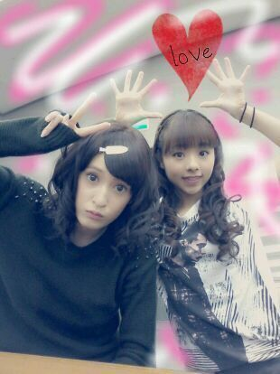
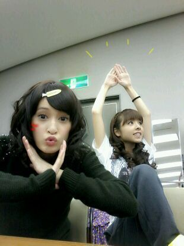

| 2012/11 18 Sun | 川村真洋 新曲は『春のメロディ〜♪』rott y. |
ぽぽぉーい ♪ノシ
ぽぽぉーいって何や 笑?
気にせんでいいや^^
ろってぃだぉ(・ω・)♪

久しぶりの
巻髪でし*・ω・*

座ってる様に見えるけど
立ってるんよぉ〜♪
せちゃんもまひろも
顔とポーズが
もうよう分からんなあ(・ω・)笑
いいね☆★☆
今日は
マンモスフリーマーケットに
参加してきましたぁぁ☆
本間 楽しかった楽しかった〜＼(^o^)／
スタッフの皆様
メンバーの皆
見にきてくださった皆様
これなかったけど、
遠くから応援してくれていた
皆様ぁ〜
本当にありがとう
ごさいました*^^*
長野 岡山 名古屋...
どれもこれも
私にとっての
最高な時間になりました。
〃ω〃
新曲 『春のメロディー♪』は
どうでしたでしょうか?
初めてのパフォーマンスで
少し ドキドキしました。
もしかすると、もしかすると、
明日 乃木どこ で
ながれるんぢゃないぃ〜 わら?
...
帰り。
皆 爆睡...
誰もかまってくれんかった
(´∀`)
おこたん。笑テヘ
最初 2時間位は
音楽きいたり
迷惑かけたあかんから
静かにしてたんやけど
目も覚めて
音楽も聞きつきて
途中から
１人で、
歌ったり
しりとりしたり
外に書いてある文字読んだり
踊ったり色々してしまった
...´ω`;
時たま
隣の、かなりんの方見たり
後ろにいた、まあやに
「暇ぁ〜。」って
言ってみたりしてみたぉ。
で頑張って 東京まで
戻ってきたあ(・ω・ )))
あ〜、今めちゃ
眠くなってきたよぉ〜(-。-*)
そろそろ寝るとする(*^^*)
ほな 皆様,
おやすみなさい (⌒‐⌒)